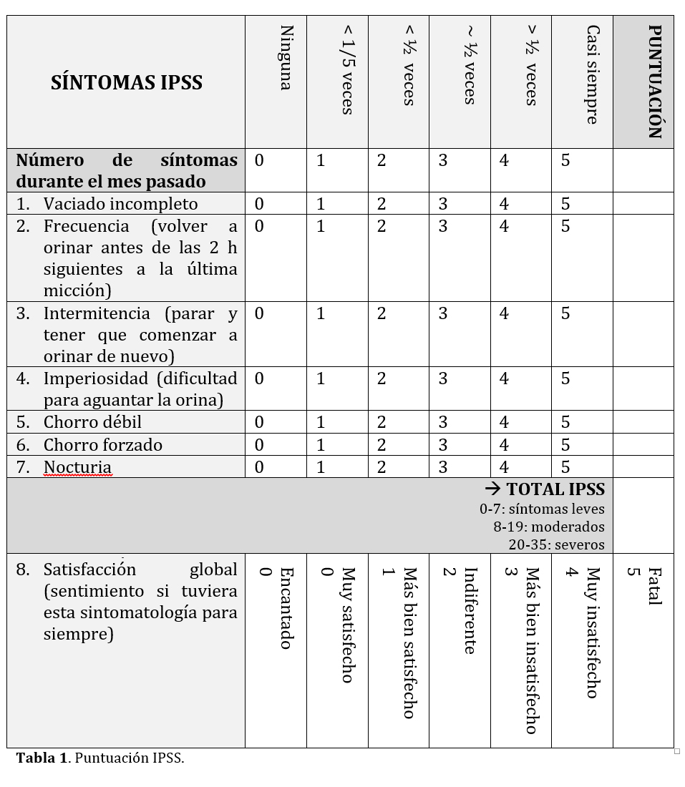
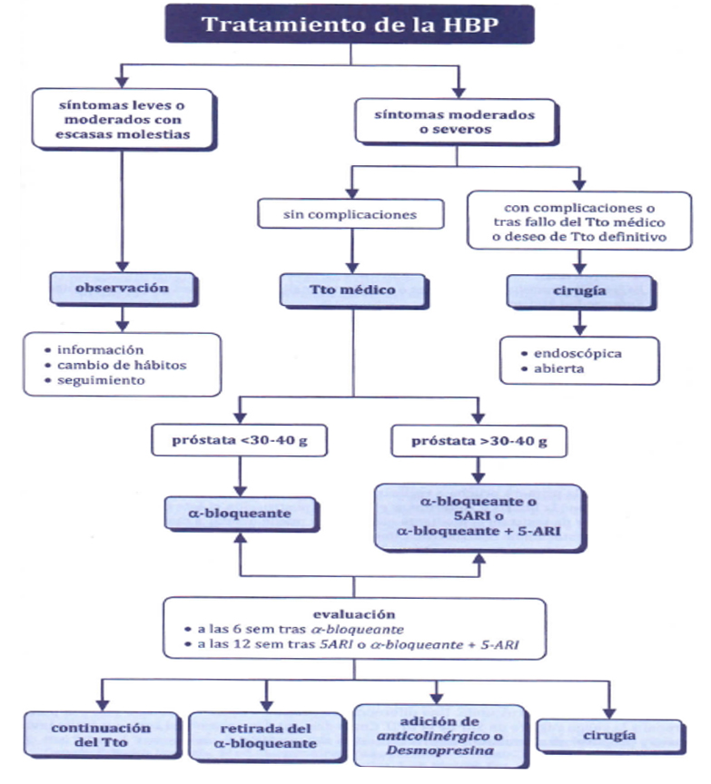

<div class="pages">
  <div data-page="projects" class="page no-toolbar no-navbar">
    <div class="page-content">
    
     <div class="navbarpages">
       <div class="navbar_home_link"><a href="toogle.html"></a></div>
       <div class="navbar_page_center"><b>Especialidades</b></div>
       <div class="menu_open_icon_white"><a href="#" class="open-panel"></a></div>
     </div>
     <div id="pages_maincontent">

          <h2 class="page_subtitle">Hiperplasia benigna de próstata</h2>
          <p><b>Autor/a:</b> Manuela Pacheco Moreno, Servicio de Urología, Hospital de Mérida, Mérida (Badajoz)</p>
          <div class="page_single">         
              <div class="buttons-row">
                    <a href="#tab3" class="tab-link active button">Diagnóstico</a>
                    <a href="#tab4" class="tab-link button">Tratamiento</a>
              </div>
              
              <div class="tabs-simple">
                    <div class="tabs">
                          <div id="tab3" class="tab active">
                          		<br />
                                <h4>Diagnóstico</h4>
                                <p class="justify">
                                	Ante la existencia de clínica, las pruebas diagnósticas recomendadas por la Asociación Europea de Urología son:<br /><br />
                                    &bull;&nbsp; Anamnesis.<br />
                                    &bull;&nbsp; Puntuación de síntomas IPSS.<br />
                                    &bull;&nbsp; Exploración física (tacto rectal)<br />
                                    &bull;&nbsp; Niveles de PSA.<br />
                                    &bull;&nbsp; Sedimento urinario.<br />
                                    &bull;&nbsp; Creatinina en sangre.<br />
                                    &bull;&nbsp; Flujometría (opcional en una consulta de Atención Primaria).
                                </p>
                                
                                <p class="justify">
                                	1. <u>Anamnesis</u>. Es muy importante y la que nos ayudará a descartar la existencia de complicaciones asociadas u otras patologías concomitantes. Los síntomas urinarios más frecuentes son:<br /><br />
                                    &bull;&nbsp; <b>Obstructivos (o de vaciado):</b>
                                </p>
                                	<blockquote class="sin">
                                        - Dificultad en el inicio de la micción.<br />
                                        - Chorro débil o lento.<br />
                                        - Goteo postmiccional.<br />
                                        - Micción intermitente.<br />
                                        - Vaciado vesical incompleto.
                                    </blockquote>
                                <p class="justify">
                                    &bull;&nbsp; <b>Irritativos (o de llenado):</b>
                                </p>
                                	<blockquote class="sin">
                                        - Aumento de frecuencia miccional diurna o nocturna.<br />
                                        - Urgencia miccional.<br />
                                        - Incontinencia de orina de urgencia.<br />
                                        - Dolor suprapúbico.
                                    </blockquote>
                                
                                <p class="justify">
                                	2. <u>Puntuación IPSS (índice internacional de síntomas prostáticos):</u> Una mejoría de 3 unidades respecto al valor basal se considera perceptible por el paciente y, por lo tanto, está aceptada como umbral mínimo de mejoría clínica.
                                </p>
                                <p></p>
                                <p class="justify">
                                	3. <u>Exploración física:</u> incluye el tacto rectal (una próstata sugestiva de HBP es aquella próstata aumentada de tamaño, indolora, blanda, bien delimitada, móvil); exploración abdominal (para descartar globo vesical o masas); periné (para valorar tono muscular, sensibilidad, alteraciones de la inervación); escroto.<br /><br />

                                    4. <u>Niveles de PSA:</u> Los niveles de PSA aumentan de forma natural con la edad, además de con el crecimiento prostático (HBP), las infecciones (prostatitis) y el cáncer de próstata.<br /><br />
                                    
                                    5. <u>Sedimento urinario:</u> La existencia de micro o macrohematuria nos obliga a descartar otras patologías que pueden ser la causa de la sintomatología: tumores uroteliales, infecciones. La glucosuria elevada puede indicar la existencia de una diabetes mal controlada o no diagnosticada, que también puede provocar sintomatología irritativa miccional.<br /><br />
                                    
                                    6. <u>Creatinina en sangre:</u> ayuda a descartar insuficiencia renal 2ria a residuo postmiccional elevado con ureterohidronefrosis 2ria por vaciamiento vesical incompleto.
                                    <br /><br />
                                    
                                    Hay otras pruebas que también deberían tenerse en cuenta, como la glucemia (en diabéticos, unos niveles de glucosa mal controlados producen sintomatología del tracto urinario inferior); urocultivos (la existencia de macro o microhematuria obligan a descartar una ITU recurrente que pueda estar provocando la sintomatología); ecografía (para valorar el residuo postmiccional y la existencia de complicaciones asociadas).
                                </p>
                          </div>
    
                          <div id="tab4" class="tab">
                          		<br />
                                <h4>Tratamiento</h4>
                                <p class="justify">
                                    El hecho de tener una glándula prostática aumentada de tamaño no implica la necesidad de tratamiento. La HBP es una patología que hay que tratar exclusivamente cuando produce clínica o complicaciones.<br /><br />
                                    
                                    &bull;&nbsp; <u>Tratamiento expectante.</u> Indicado en pacientes con síntomas IPSS leves, con síntomas no molestos o en aquellos no dispuestos a tomar medicación por los efectos secundarios. Se pueden recomendar cambios en el estilo de vida:
                                </p>
                                	<blockquote class="sin">
                                        - Restringir la ingesta de líquidos (por ejemplo, antes de irse a la cama)<br /><br />
                                        - Evitar la cafeína o el alcohol (efecto irritativo)<br /><br />
                                        - Prevenir y/o supervisar algunos medicamentos (por ejemplo, diuréticos, descongestionantes, antihistamínicos, antidepresivos)<br /><br />
                                        - Programar el vaciado (readaptación de la vejiga)<br /><br />
                                        - Ejercicios de suelo pélvico<br /><br />
                                        - Tratamiento del estreñimiento
                                    </blockquote>
                                <p class="nojustify">   
                                    &bull;&nbsp; <u>Agentes fitoterápicos.</u> La mayor parte de la evidencia sobre su eficacia procede de estudios clínicos con limitaciones en el diseño, por lo que existe controversia sobre su eficacia.<br /><br />
                                    
                                    &bull;&nbsp; <u>Alfa-bloqueantes.</u> El bloqueo de los receptores adrenérgicos en la próstata se traduce en una relajación de la fibra muscular lisa, que hace disminuir la resistencia uretral a la salida de la orina. No tienen efecto sobre el volumen prostático ni previenen el crecimiento de la próstata. Posibles efectos secundarios: hipotensión ortostática, síncope; cefalea, congestión nasal  rinitis, eyaculación retrógrada. Los alfa-bloqueantes uroselectivos (tamsulosina y silodosina) tienen menos efectos secundarios, excepto la eyaculación retrógrada, que es signo de efectividad del fármaco. Puede tardar hasta 3 meses en conseguir el efecto completo.<br /><br />
                                    
                                    &bull;&nbsp; <u>Inhibidores de la 5-alfa-reductasa</u> (finasteride y dutasteride): inhiben la isoenzima necesaria para la conversión de testosterona en dihidrotestosterona (metabolito activo) dentro de la célula prostática. Por este mecanismo disminuye el tamaño prostático hasta en un 30% de los pacientes. Pueden tardar hasta 6 meses en ejercer el efecto completo. Reducen el PSA hasta en un 50% de su valor inicial, aunque esto no hace que disminuya el riesgo de cáncer de próstata, sino solo el valor del PSA. Es importante monitorizar los ascensos del PSA una vez conseguido el valor mínimo de PSA con este fármaco. Efectos adversos: alteraciones en la sexualidad (disfunción eréctil, disminución de la líbido), ginecomastia.<br /><br />
                                    
                                    &bull;&nbsp; <u>Tratamiento combinado</u> (alfa-bloqueante + inhibidor de la 5-alfa-reductasa): la combinación más utilizada es tamsulosina + dutasteride (Duodart®). Se utiliza como 1ª opción en pacientes sintomáticos con IPSS moderado (8-19) y factores de riesgo de progresión de la enfermedad: volumen prostático mayor de II/IV en tacto rectal o ≥ 30 cc por ecografía; PSA ≥ 1,5 ng/dl.<br /><br />
                                    
                                    &bull;&nbsp; <u>Antimuscarínicos</u> (solifenacina, fesoterodina) o agonistas del receptor adrenérgico  ß3 (mirabegrón): se pueden añadir en pacientes con predominio de síntomas irritativos que no han mejorado con los fármacos previos.<br /><br />
                                    
                                    &bull;&nbsp; <u>Tratamiento combinado </u>(alfa-bloqueante + antimuscarínico): el fármaco más utilizado es la combinación tamsulosina + solifenacina. Se puede utilizar como 1ª opción en pacientes con HBP y sintomatología principalmente irritativa.<br /><br />
                                    
                                    &bull;&nbsp; <u>Tratamiento quirúrgico:</u> indicado en pacientes con síntomas moderados o graves que no mejoran después del tratamiento médico o aquellos que no desean un tratamiento médico pero solicitan una intervención activa o pacientes con una indicación clara para la cirugía como: 

                                </p>
                                	<blockquote class="sin">
                                        - Insuficiencia renal<br />
                                        - Litiasis vesical<br />
                                        - Retención urinaria refractaria<br />
                                        - ITU recurrente<br />
                                        - Macrohematuria recurrente refractaria a tratamiento médico con inhibidores de la 5-alfa-reductasa
                                    </blockquote>
                              	<p class="nojustify"> 
                                	El tratamiento quirúrgico consiste en:
                                </p>
                                	<blockquote class="sin">
                                        - Incisión transuretral de la próstata en próstatas con volumen < 30 cc y sin lóbulo medio.<br />
                                        - Resección transuretral de próstata (RTU-p) en pacientes con próstata de 30-80 cc.<br />
                                        - Prostatectomía o adenomectomía abierta en pacientes con próstata de 60-80 cc.
                                    </blockquote>
                                <p></p>
                          </div> 
              </div>        
          </div>     
      </div>  
    </div>
  </div>
</div>